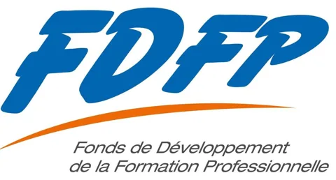
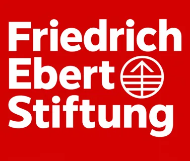
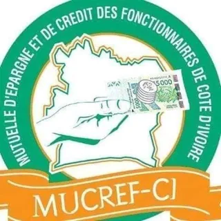

Accueil › Partenaires
Partenaires
Le REFL-CI s’appuie sur des fondations, des institutions et des experts pour offrir aux fonctionnaires des formations de haut niveau.
Assemblée générale constitutive du 20 février 2026
La naissance du réseau s’est faite en présence de représentants des autorités administratives et des institutions suivantes, ainsi que de responsables d’organisations professionnelles.
- Ministère de la Fonction Publique et de la Modernisation de l’Administration
Département ministériel chargé du recrutement, de la gestion et de la formation des agents de l’État, des concours administratifs et de la modernisation de l’administration : dématérialisation des procédures, simplification et qualité du service rendu aux usagers.
Représenté par la Direction régionale de la Fonction publique de Yamoussoukro, au nom de Madame la Ministre.
fonctionpublique.gouv.ci 
FDFP, Fonds de Développement de la Formation ProfessionnelleOrganisme ivoirien créé en 1991 pour financer et développer la formation professionnelle continue et l’apprentissage. Il accompagne les entreprises, les organismes de formation et les porteurs de projets collectifs dans le développement des compétences.
Représenté par son Vice-président.
fdfp.ci
Fondation Friedrich-Ebert-Stiftung (FES)Fondation politique allemande qui œuvre notamment pour la démocratie, la justice sociale, la solidarité et le renforcement des organisations de la société civile et des syndicats. Elle porte le nom de Friedrich Ebert, premier président allemand élu démocratiquement.
Représentée par M. Séraphin Kouamé.
- NOE Polytechnique (Network of Education), Université d’ingénierie
Établissement de formation fondé et présidé par le Dr Eddy Brice Gnapia, enseignant-chercheur à l’INP-HB de Yamoussoukro. Il propose des formations courtes et professionnalisantes, en ligne ou en présentiel, du Brevet spécialisé au doctorat professionnel : entrepreneuriat, management et leadership, gestion des crises et des conflits, QHSE, agro-industrie.
Représenté par M. Christian, au nom du Dr Gnapia.

MUCREF-CI, Mutuelle d’Épargne et de Crédit des Fonctionnaires de Côte d’IvoireInstitution financière mutualiste créée le 31 juillet 2002 et agréée en 2003. Elle facilite l’épargne et l’accès au crédit des fonctionnaires et agents de l’État, et les aide à mieux gérer leurs ressources, à financer leurs projets et à éviter les prêteurs informels.
Représentée par le Président de son conseil d’administration.
mucrefci.org
Investir dans le capital humain de l’administration
Le REFL-CI sollicite l’accompagnement de fondations, d’institutions et de partenaires techniques pour déployer des programmes de formation structurés, innovants et à fort impact.
Ces partenariats permettent de mutualiser les expertises, de mobiliser des formateurs de haut niveau et de garantir la durabilité des actions du réseau.
Programmes de formation
Co-construire et financer des modules en leadership, management public, communication ou protocole.
Actions citoyennes
Soutenir des actions de solidarité, de salubrité ou de rénovation d’édifices publics dans les régions.
Valorisation du mérite
Accompagner les dîners gala et les distinctions qui récompensent les fonctionnaires modèles.